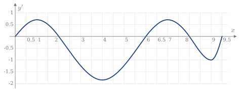
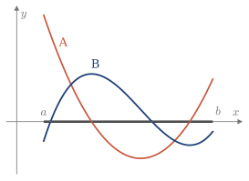
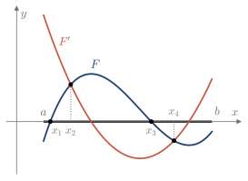
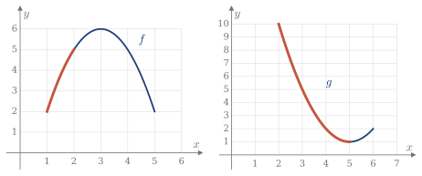

4.6 Estudio a partir de gráficas
A veces no se tiene la fórmula de una función, sino su gráfica. No hace falta teoría nueva: el signo de las derivadas se lee en el dibujo.
Leer una gráfica
Recuerda: qué se lee en cada gráfica
En la gráfica de f:
- Si sube, f'>0; si baja, f'<0.
- Si es cóncava, f''>0; si es convexa, f''<0.
En la gráfica de f':
- El signo de f' da el crecimiento de f. Un cero con cambio de signo es un extremo local de f.
- Si f' sube, f es cóncava; si baja, es convexa. Un extremo local de f' es un punto de inflexión de f.
Ejemplo 4.16
La Figura 4.16 muestra la derivada y'(x) de una función y(x). Las longitudes están en cm. (2023/24 2E)
- Estudiar el crecimiento y los extremos locales de y.
- Estudiar la concavidad y los puntos de inflexión de y.
- Un punto se mueve sobre la gráfica de y(x). Cuando x=0.5, su velocidad horizontal es de 2 cm/s. Calcular su velocidad vertical en ese instante.
- Cuando x=6.5, su velocidad vertical es de 3 cm/s. Calcular su velocidad horizontal en ese instante.

Figura 4.16. Gráfica de y'(x).
(a) Se mira el signo de y': \begin{array}{c|cccc} & (0,2) & (2,6) & (6,8) & (8,9.5)\\ \hline y' & + & - & + & -\\ y & \text{crece} & \text{decrece} & \text{crece} & \text{decrece} \end{array} Hay máximos locales en x=2 y x=8, y un mínimo local en x=6.
(b) Se mira si y' sube o baja, que es el signo de y'': \begin{array}{c|ccccc} & (0,1) & (1,4) & (4,7) & (7,9) & (9,9.5)\\ \hline y' & \text{sube} & \text{baja} & \text{sube} & \text{baja} & \text{sube}\\ y & \text{cóncava} & \text{convexa} & \text{cóncava} & \text{convexa} & \text{cóncava} \end{array} Hay puntos de inflexión en x=1,4,7,9.
(c) Por la regla de la cadena, con y'(0.5)=0.5 en la gráfica: \frac{dy}{dt}=\frac{dy}{dx}\frac{dx}{dt}=0.5\cdot2=1\ \text{cm/s}.
(d) La misma relación, con y'(6.5)=0.5: \frac{dx}{dt}=\frac{dy/dt}{dy/dx}=\frac{3}{0.5}=6\ \text{cm/s}.
Funciones construidas con una gráfica
Si una función nueva se construye a partir de una gráfica, se deriva con las reglas de siempre y se estudia el signo de cada factor.
Ejemplo 4.17
La Figura 4.17 muestra una función F(x) y su derivada F'(x) en (a,b). (2015/16 2E)
- Decir, razonando, qué curva es F y cuál es F'.
- Estudiar el crecimiento y los extremos de h(x)=e^{-2x}F(x)^2.

Figura 4.17. Las curvas A y B: una es F y la otra es F'.
(a) B es F y A es F'. La curva A se anula justo donde B tiene sus extremos, y es positiva donde B sube. Al revés no puede ser: A tiene un mínimo en un punto donde B no se anula.
(b) La derivada es h'(x)=2F\,F'\,e^{-2x}-2e^{-2x}F^2=2e^{-2x}\,F(x)\,\bigl[F'(x)-F(x)\bigr]. Como e^{-2x}>0, el signo de h' es el de F\,(F'-F). Se anula donde F=0, en x_1 y x_3, y donde se cortan las curvas, F'=F, en x_2 y x_4 (Figura 4.18): \begin{array}{c|ccccc} & (a,x_1) & (x_1,x_2) & (x_2,x_3) & (x_3,x_4) & (x_4,b)\\ \hline F & - & + & + & - & -\\ F'-F & + & + & - & - & +\\ h' & - & + & - & + & -\\ h & \text{decrece} & \text{crece} & \text{decrece} & \text{crece} & \text{decrece} \end{array} Hay mínimos locales en x_1 y x_3, y máximos locales en x_2 y x_4.
Comprobación: h\ge0 y h=0 en x_1 y x_3, así que estos puntos tienen que ser mínimos.

Figura 4.18. F=0 en x_1 y x_3; F'=F en x_2 y x_4.
Composición de funciones
Si h(x)=g(f(x)), la regla de la cadena da los signos a partir de las dos gráficas.
Recuerda: derivadas de una composición
h'(x)=g'\bigl(f(x)\bigr)\,f'(x),\qquad h''(x)=g''\bigl(f(x)\bigr)\,f'(x)^2+g'\bigl(f(x)\bigr)\,f''(x)
f' y f'' se leen en x; g' y g'' se leen en f(x).
Ejemplo 4.18
Sean f y g las funciones de la Figura 4.19. Estudiar la concavidad de h(x)=g(f(x)) en (1,2). (2018/19 3E)

Figura 4.19. En rojo, el tramo de f para x\in(1,2) y el tramo de g en sus imágenes, (2,5).
Si x\in(1,2), f(x)\in(2,5), así que g se mira en (2,5), no en (1,2):
- f crece y es convexa en (1,2): f'>0 y f''<0.
- g decrece y es cóncava en (2,5): g'<0 y g''>0.
Por tanto, h''=\underbrace{g''(f)}_{+}\,\underbrace{f'^2}_{+}+\underbrace{g'(f)}_{-}\,\underbrace{f''}_{-}>0, y h es cóncava en (1,2).
Comprobación: las gráficas corresponden a f(x)=6-(x-3)^2 y g(x)=(x-5)^2+1. Con u=x-3, resulta h=(1-u^2)^2+1 y h''=12u^2-4, que es positiva si u\in(-2,-1).
Con los contenidos de esta sección puedes hacer los ejercicios 4.25–4.28.